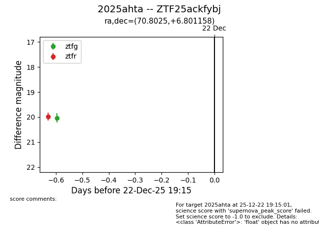
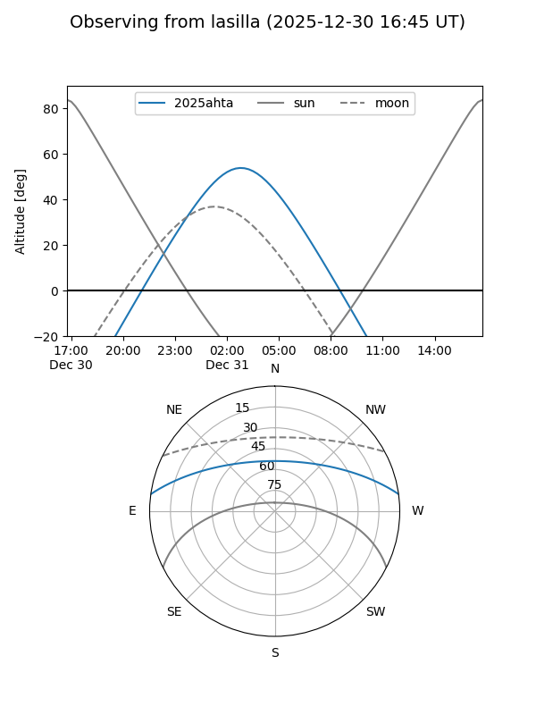
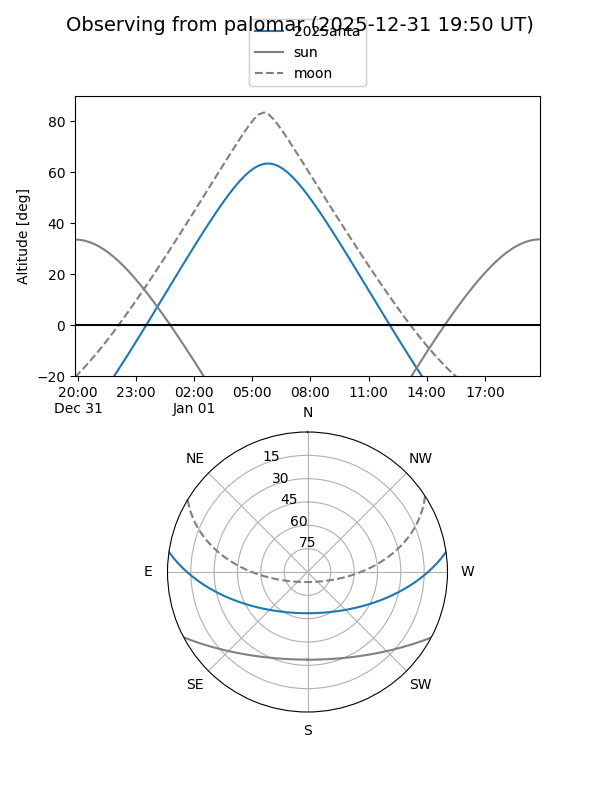
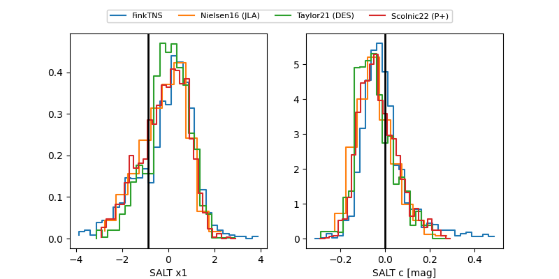

2025ahta
Target 2025ahta at 2025-12-31 17:00
Aliases and brokers:
FINK:
Lasair:
ALeRCE:
TNS:
YSE:
alt names
ZTF25ackfybj (ztf,fink_ztf)
2025ahta (tns,yse)
Coordinates:
equatorial (ra, dec) = 70.8025,+6.80116
equatorial (HMS+DMS) = 04:43:12.60,+06:48:04.17
galactic (l, b) = (190.5990,-24.52239)
Flags:
Photometry:
last ztfg=20.03, ztfr=19.62
1 ztfg, 2 ztfr detections
Lightcurve

Visibility


Additional plots
